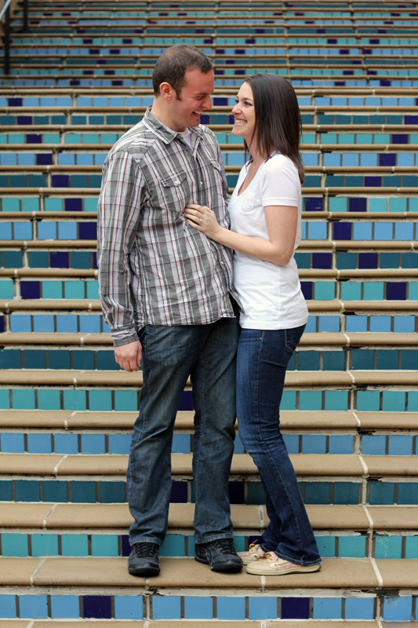

Jeff and Megan met in March of 2012 at 54th Street, thanks to Kevin and Kelly. Their first date was to see the movie 21 Jump Street later that week. That night, Jeff dropped Megan off at her grandpa’s house after the movie. For whatever reason, age came up. jeff thought it would be a good idea to say that she was almost 30. He was wrong. Lucky for him, she was able to let that comment go (sorta) and they continued to date. In the fall, they started talking about their future and knew that they had each met the person God had intended for them to be with. With Megan graduating in December, taking boards in January, and starting a new job in February, she didn't expect a proposal until February or March.
Jeff had other plans. Jeff knew Megan's favorite restaurant is Buca di Beppo on the plaza. They tried to go the first weekend in December for a date night. Their reservation wasn't until 9:00 so they spent time crashing Zane's date and taking pictures in an overlook of the plaza. Megan started feeling under the weather so they didn't get to enjoy a delicious dinner or a date night. A chance for redemption came with Jeff's office Christmas party that was to take place at the restaurant. Mother Nature got in the way and dumped enough snow and ice to shut down I-29. Since Megan was staying in St. Joe at that time, she wasn't able to join Jeff or his coworkers at that party.
On New Years Eve, Jeff and Megan made plans to go to Ashley and Dakota's house for a calm night in. Jeff decided to take this opportunity to finally take Megan to Buca so she could enjoy her favorite food. During dinner, Megan made a comment about taking a picture together before leaving to plaza. Little did she know, this played right into Jeff's plans. They went to the same overlook as before and took a couple of pictures. It was starting to snow so Megan was cold and wanted to hit the road. Jeff took Megan's hands and said, " I want to talk to you about something." Megan thought he could be proposing but then thought there was no way he had saved up the money for it already. Jeff started his speech, which Megan didn't hear because her mind was racing about whether or not this was actually a proposal. He paused. Megan had no idea what he had last said so she said, "I love you?" He laughed and returned the I love you. He stuck his hand in his pocket, got down on one knee, and asked Megan to marry him. She was shocked and said the first thing that came to her mind, "yes." At that point, their friend Lacey came out from the shadows and took pictures of them. Megan didn't notice that she had been there taking pictures the whole time. First came love, now comes marriage.